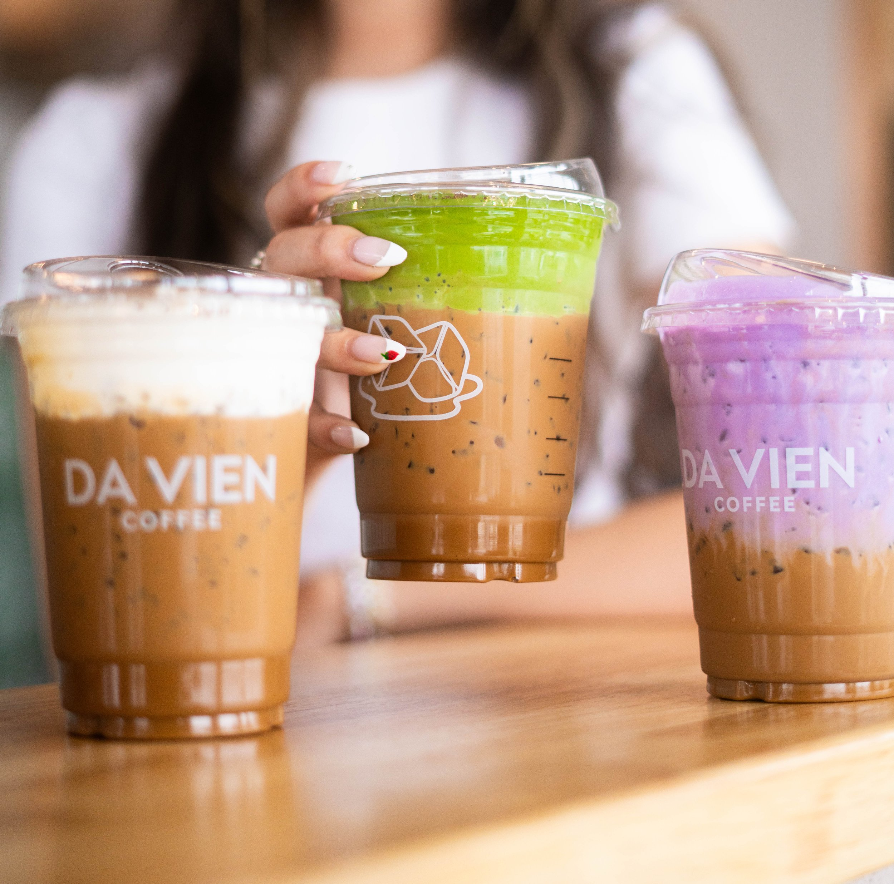

Da Vien
There are only 2 Da Vien locations, and they are both located in the Westminster/Garden Grove area. Unfortunately, that means both spots are not as accessible to everyone in the SoCal area, but the locations they occupy are as close as possible to the Vietnamese ethnic enclave in Orange County (Little Saigon). Known for their various Vietnameses coffee, specifically the Da Vien Coffee, they use coffee beans imported from the Highlands of Vietnam for authenticity and quality taste!
Here are some other popular/signature drinks served at Da Vien:
- Egg Coffee
- Ube Coffee
- Matcha Foam Coffee
- Black Sesame Latte
- Phin Drip Black Coffee
You can find their menu on their website here
